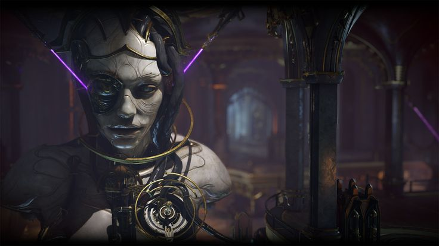

Tecnomorfos
Os Tecnomorfos são entidades parasitárias de origem desconhecida, com uma natureza profundamente ligada à
tecnologia.

Eles habitam zonas
obstruídas.
Por não possuírem um corpo físico próprio, os Tecnomorfos se apropriam de dispositivos tecnológicos para
construir uma forma corpórea rudimentar. Essa "armadura de ferro" geralmente é composta por sucata
eletrônica, peças de veículos, circuitos quebrados e qualquer material tecnológico disponível. Essa
estrutura serve tanto como proteção quanto como meio de interação com o ambiente.
A comunicação entre os Tecnomorfos é extremamente limitada. Eles não possuem linguagem própria desenvolvida
e, por isso, recorrem a tecnologias humanas para se expressar.
os Tecnomorfos são criaturas extremamente frágeis. Sua verdadeira essência, o núcleo energético que os
mantém vivos, está escondida dentro da armadura tecnológica. Esse núcleo é altamente vulnerável, se exposto,
mesmo que o Tecnomorfo esteja em plena capacidade vital, ele será destruído instantaneamente. Por isso, eles
evitam confrontos diretos e preferem se esconder ou se camuflar entre máquinas abandonadas.
Tecnomorfos
- Resistência+10
- Força+6
- Furtividade+2
- Agilidade−5
- Carisma−7
- Interpretação−4
Absorver Objeto LVL 1
Você pode incluir qualquer objeto tecnológico de tamanho médio ao seu ser, como baterias, celulares,
armas,
granadas etc, com isso você pode obter mais pontos em qualquer característica de acordo com o objeto,
como
resistência, inteligência, conhecimento.